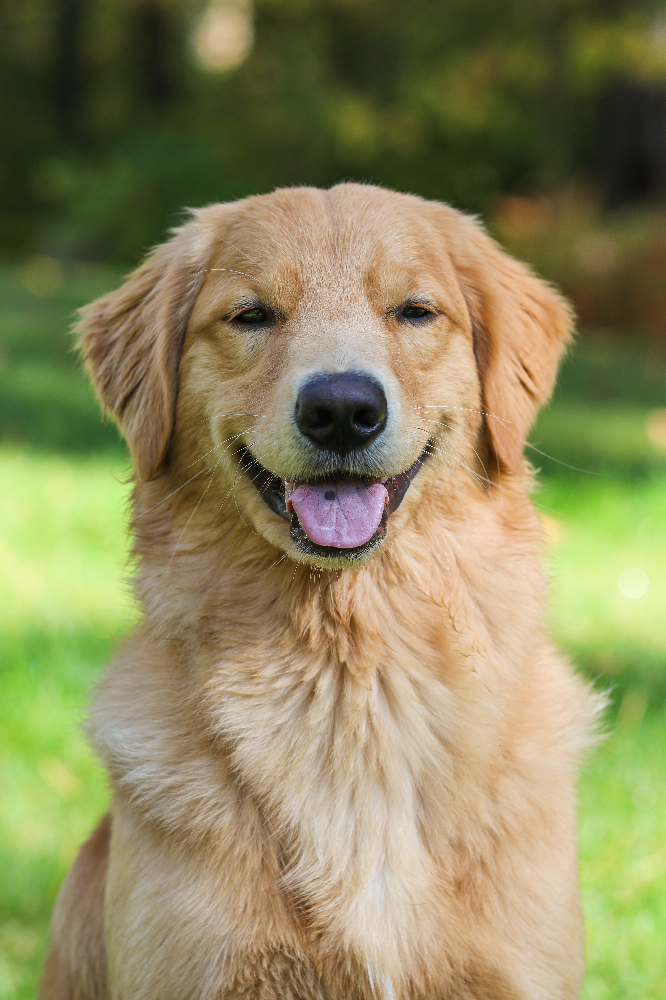
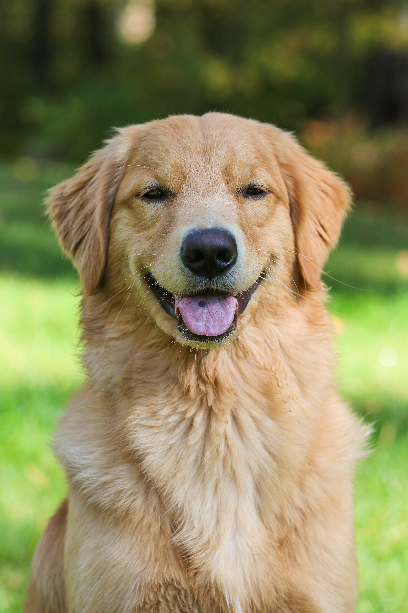

Bacon Q Dog

Bacon Q. Dog is a 9yr old labradoodle. He prefers to spend his days lounging among the three different beds/couches that his family has gifted him. He enjoys a walk or two around the neighborhood, as long as he can pretend that he doesn't see any of the other animals to avoid the embarrassment of not wanting to admit he has no wolf-like skills in chasing them.
At night just as the rest of the family is ready to relax, Bacon suddenly wants to release all of his energy. He will place his toys on a mini couch and frantically drag the couch around, giving his toys "a ride." There is also a lot of rolling. Lots and lots of rolling.
Photo Gallery


Likes
- Belly rubs
- Playing tug-of-war
- Sneaking onto the couch
Pluto

Pluto is a five year old rescue dog of an unknown breed. He was found wandering alone and taken to the Valley Humane Society where he found his new family. From a young age, Pluto always had a special personality, he was known for being very very lazy! He spends most of his time staring out the window to keep watch of his house. Don’t let the laziness fool you because Pluto defends his family from the mailman and squirrels every single day.
Aside from his job as defender of the house, Pluto likes to have fun. Pluto’s favorite part of the day is his daily walk. Sometimes he even gets to go to the park and meet his neighbors. He also loves his toy duck, and only his toy duck. As a dog, it's in his nature to hunt and so he makes sure to get some practice with his toy duck.
Photo Gallery


Likes
- Eating his bone
- Going to the beach
- His toy duck
Cody

Cody is a 7yr old Pembroke Corgi. He was born in Cavalier Farms, Seattle. He prefers to spend his days lounging on the bean bag. Every day, he enjoys two walks around the neighborhood and likes to make friends with other doggie friends. If lucky enough, he might see the cyclist, but he is not allowed to give chase.
Cody loves traveling. He enjoys walking on the beach and taking sun naps. But he hates cold weather. He would like to stay at home lounging by the fireplace in winter.
Photo Gallery


Likes
- Traveling
- Lounging
- Tennis balls
Maple

Maple is a 2 year old tabby cat with brown stripes. She is very playful and friendly but also loves lounging in the sun! Maple is a huge fan of treats - she has even learned how to open doors to steal some extra treats.
Sometimes Maple has boundless energy. At night, she gets the zoomies after eating her final meal of the day. It usually takes her another hour to settle down before she can take a long nap.
Photo Gallery


Likes
- Belly rubs
- Treats
- Stretching her paws
Peddie

Peddie, the Golden Retriever, is a charming and lively companion known for his beautiful coat and playful nature. He's a perfect partner for outdoor fun, loved for his loyalty and gentle disposition.
Peddie's intelligence and friendly demeanor make him a beloved member of his family and a source of joy for everyone who knows him.
Photo Gallery

 


Likes
- Swimming
- Running in the park
- Meeting new friends